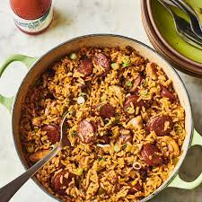

Jambalaya

Description
An easy to cook meal that can bring a bit of zaz to your
evening.
ingredients
one box of jambalaya mix
ground turkey
water
Cooking Directions
cook the ground turkey
mix 2 1/2 cups of water, jambalaya mix, and turkey
in 3 quart saucepan until well blended
bring to a boil
reduce heat to a low
cover, simmer for 25 minutes or until rice is tender
Remove from heat, let stand for 5 minutes